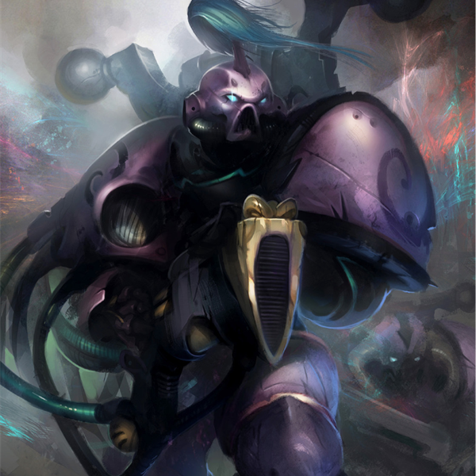
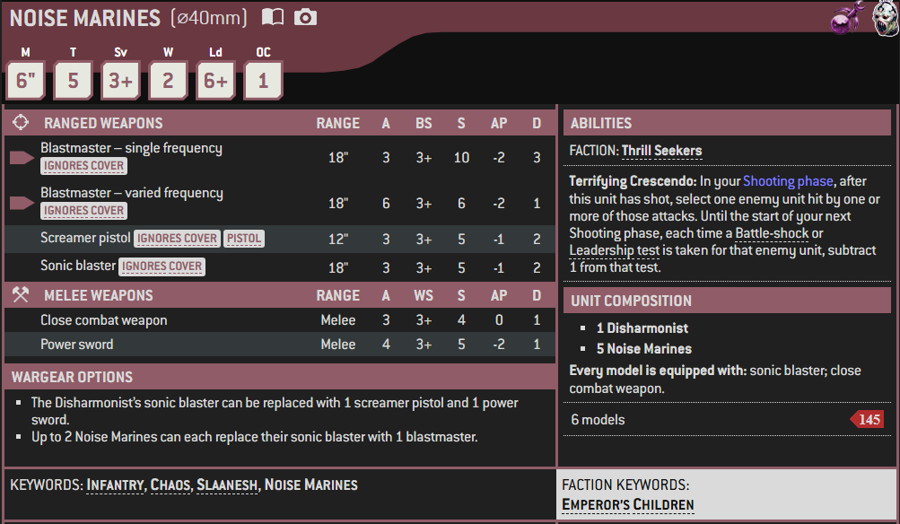

1 / 3

Miniature
2 / 3

Box Art
3 / 3

Artwork
Noise Marines are Chaos Space Marine foot soldiers deeply dedicated to the Chaos God Slaanesh who are most commonly found in the Emperor's Children Traitor Legion, but also in other Slaanesh-devoted Heretic Astartes warbands such as the Flawless Host. Their trademark is the use of devastating Sonic Weapons that confuses and demoralizes enemy forces in a wild show of "deafeningly loud, psycho-sonically and pyrotechnically explosive attacks."
The earliest origin of the Noise Marines goes back to the days and nights when the primarch Fulgrim and his Emperor's Children Legion first heeded the silky whispers of Slaanesh, just before the outbreak of the Horus Heresy. Claiming inspiration from the tribesmen of the Chaos-corrupted world of Davin, the Warmaster Horus introduced Fulgrim and his chief lieutenants to the practice of elaborate feasting and drinking, including the use of exotic narcotics and indulgence in other pleasurable diversions.
Entranced by the ecstatic celebrations, the officers of the Emperor's Children took these debased customs back to the rest of their warriors. In this way, the cult of Slaanesh first began to take root in the IIIrd Legion, before their eventual corruption was completed following the Cleansing of Laeran at the end of the Great Crusade. Ever since that first exposure to the Chaos energies of the Dark Prince in the Laer's temple on that serpentine xenos species' homeworld of Laeran, the Emperor's Children have sought to indulge every excess and depravity they can imagine, pushing the boundaries of their minds as far as possible as they hone their bodies to the limit of blissful endurance.
Noise Marines are perfect hedonists, completely dedicated to pushing their corrupted minds and bodies to the absolute limits of sensation. All have spent standard centuries enraptured in the throes of Slaanesh's service, and their ceaseless devotions have corrupted their bodies until only the most extreme sensations hold any satisfaction for their pleasure-addled synapses. Now their every thought is bent wholly towards their own self-gratification, and their imaginations incessantly overflow with insane visions of reckless and loathsome indulgences.
